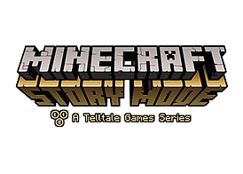

Episode 1: The Order of the Stone.
Первый эпизод знакомит с Джесси и его командой: могучим Акселем,
строительницей Оливией, поросёнком Рубеном.
Episode 2: Assembly Required
История персонажей из первого сезона продолжается.
Перед нами вновь предстаёт главный герой — Джесси. Отношения в его команде,
однако, изменились. Друзья начали отдаляться друг от друга. Но однажды, когда
Джесси и Петра ищут в шахте сокровища, в руку Джесси крепко вцепляется
Призмариновая Перчатка.
Episode 3:The Last Place You Look
В отличие от прошлых глав, в третьем эпизоде есть все составляющие успеха.
Начальные QTE-сцены отлично интегрируются в заставку с титрами, а схватки
с противником в середине игры и финальный поединок с Иссушителем пронизаны
адреналином и острым драматизмом. Главные герои и особенно доступная в женской
и мужской версии Джесси, раскрываются с неожиданной стороны, а элемент исследования
и поиска решений вновь становятся неотъемлемой частью игры.
Episode 4: A Block and a Hard Place
Как и обещали создатели, завершает арку Иссушающей бури и выносит
финальный приговор Ордену Камня. История, которая всячески пыталась зависеть от
выбора игроков, здесь вновь возвращается к единственному варианту развития событий
с грустным прощанием с одним из персонажей, а также финальным эпическим сражением.
Episode 5: Order Up!
Успешно вмещает в два с половиной часа игрового времени насыщенную
событиями историю. Здесь собраны воедино пропитанные экшеном сцены, редкие для
серии головоломки, запутанный сюжет, новые персонажи и классический юмор с массой
гэгов, ситуационных шуток и уморительных диалогов.
Episode 6: A Portal to Mystery
Эпизод 6 режима истории Minecraft был не так давно выпущен для Xbox One.
Хотя она не получила восторженных отзывов, это не значит, что это плохая игра.
Напротив, Microsoft, похоже, справляется с этой франшизой, сумев продать более 100
миллионов копий названия, хотя мы не уверены, включает ли это режим истории.
Episode 7: Access Denied
Седьмой эпизод о приключениях храброго Джесси и его друзей в мире Minecraft.
Episode 8: A Journey's End?
Расширенный первый сезон Minecraft: Story Mode от Telltale Games подходит
к концу, и в финальном эпизоде Джесси и его друзьям представится возможность познакомиться
с создателями порталов, с помощью которых главные герои нашли не мало приключений на свои
квадратные жо… головы.
 Home
Story Mode
Earth
Dungeons
Home
Story Mode
Earth
Dungeons